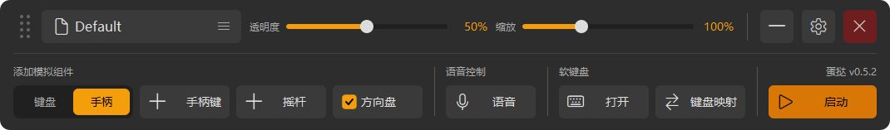
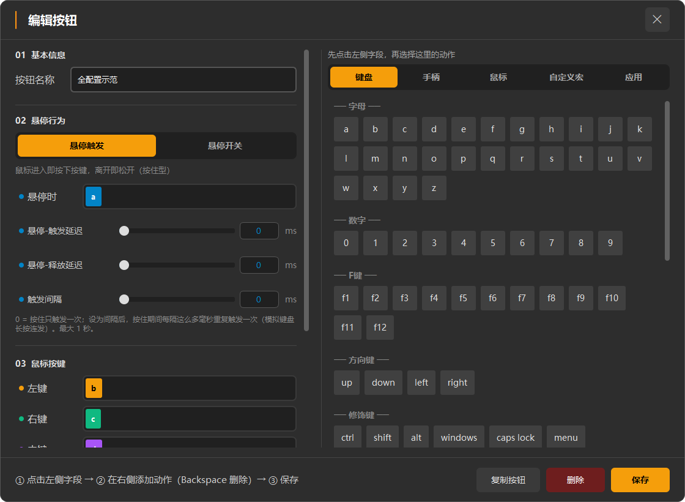
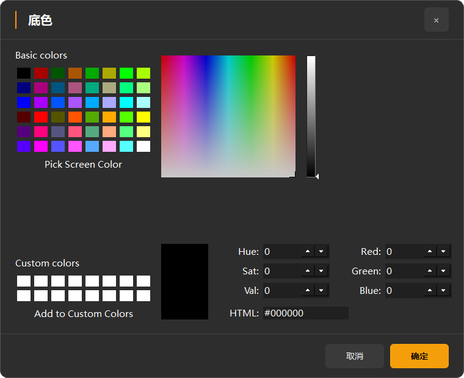

运行中的客户端
通过原 main.main() 启动。窗口使用 UI 分支的本地默认方案，原目录中的方案和配置保持独立。
编辑工具栏 · 方案 / 透明度 / 缩放 / 窗口操作；添加模拟组件 / 语音控制 / 软键盘 / 启动

当前方案的“全配置示范” · 原按钮编辑入口

配色面板 · 确认 / 取消移到固定底栏

运行工具栏 · 保留原入口和状态配色
编辑弹窗
实际 Qt 组件截图。流程引导在底栏左侧，确认按钮统一琥珀；横向互斥选项使用槽式选择。原有字段、候选动作与预览保持原功能。
设置 · 六个页面
沿用原侧边导航与控件预览；当前页面的已有保存 / 重置操作移至固定底栏。
子弹窗与状态窗口
采用同一标题 / 底栏外壳。语音识别、驱动检测、诊断打包在截图盘点中暂停；这些图片用于检查视觉。
压缩工作区
在实际 Windows Qt 中模拟 1216×620 逻辑尺寸，检查高缩放 / 较小可用空间；标题、关闭和底栏保持可见。
盘点环境：逻辑屏幕 2048×1152、可用 2048×1104、DPR 1.25。正式入口沿用原关闭 Qt 缩放的设置，运行截图 DPR 为 1。尺寸核对记录